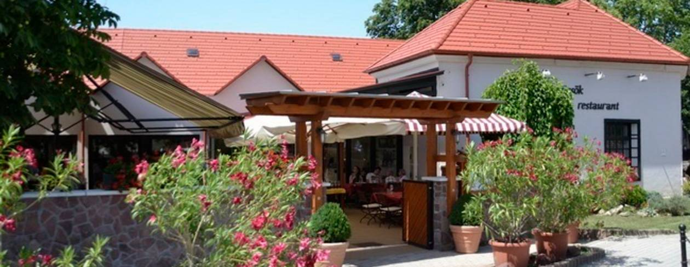

L'amour de la tradition implique l'amour du futur - Lalla Romano. Cette devise du célèbre écrivain italien est très proche de la philosophie de Kistücsök. »
Kistücsök se trouve au bord sud du Lac, à Balatonszemes. Le restaurant a une profile moderne en retravaillant aussi les plats traditionnels. Très connu dans tout le pays, il ne faut pas oublier de réserver une table avant arriver.